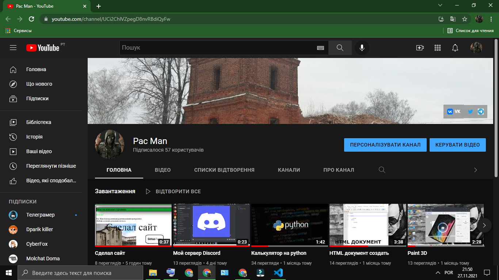

Моя маленькая страница
Кто я?
Pac Man-блогер,монтажер,начинающий програмист.
Люблю слушать рок,панк,металл.

Odivelas
Одивелаш является португальским городом в районе Лиссабон , области и подобласти
столичной зоны Лиссабона , около 144 000 жителей.
Сейчас я там живу.
Раньше жил на Украине,Черновцы.
Черновцы́ (до 1944 «Чернови́цы»[3], укр.
Чернівці́) — город на юго-западе
Украины, в 40 км к северу от
румынской границы.
Административный центр Черновицкой области, Черновицкого района
и Черновицкой агломерации.
Основан в XII веке галицким князем Ярославом Осмомыслом.
Крепость с торгово-ремесленным поселением называлась
Черн или Чорный город (укр. Черн) из-за чёрных деревянных стен.
Развалины крепости сохранились на древнерусском Ленковецком городище.


Про мой канал

Канал был создан 27 трав. 2020 р. Мне просто было скучно
и снимал всякие ролики на свой ютуб канал.
Ссылки:
VK
email:andrijgtasnik@gmail.com